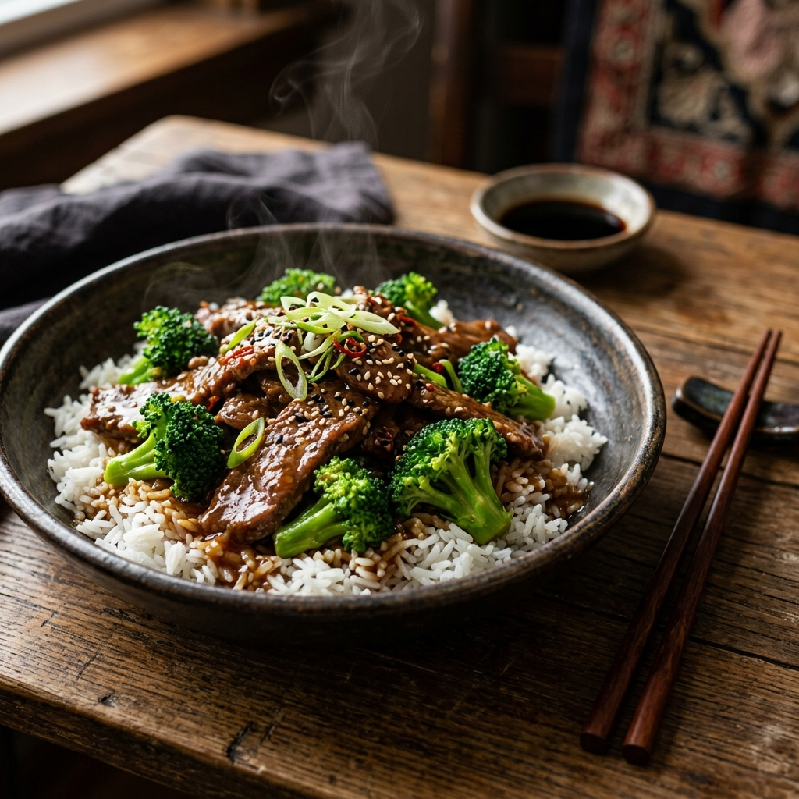

Description
A classic and savory stir-fry that combines tender beef with crisp broccoli in a rich soy-based sauce.
Ingredients
- 500g Flank steak, thinly sliced
- 2 heads Broccoli, cut into florets
- 1/2 cup Soy sauce
- 2 tbsp Sesame oil
- 1 tbsp Brown sugar
- 2 cloves Garlic, minced
- 1 tbsp Ginger, minced
- 1 tbsp Cornstarch
- 1/4 cup Water
Instructions
- In a small bowl, whisk together soy sauce, sesame oil, brown sugar, garlic, and ginger.
- In a separate bowl, mix cornstarch and water to create a slurry.
- Heat a large skillet or wok over high heat with 1 tbsp oil.
- Add sliced beef and stir-fry until browned, then remove from skillet.
- Add broccoli and a splash of water, cover for 2 minutes to steam.
- Return beef to the skillet and pour the sauce over everything.
- Stir in the cornstarch slurry and cook until the sauce thickens and coats the beef and broccoli.
- Serve hot over steamed rice.